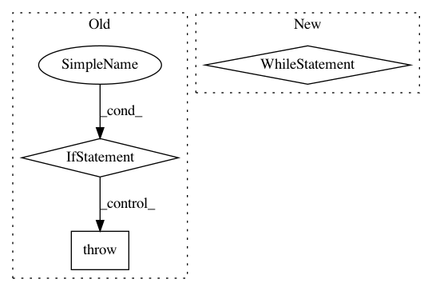

1cef0db206bc14c68be02b5bb8c40fccb0568adb,train.py,DatasetLazyIter,__iter__,#DatasetLazyIter#,126
Before Change
yield batch
except StopIteration:
self.cur_iter = self._next_dataset_iterator()
if self.cur_iter is None:
raise StopIteration
else:
for batch in self.cur_iter:
yield batch
def __len__(self):
// We return the len of cur_dataset, otherwise we need to load
// all datasets to determine the real len, which loses the benefit
// of lazy loading.
After Change
assert self.cur_iter is not None
def __iter__(self):
while self.cur_iter is not None:
for batch in self.cur_iter:
yield batch
self.cur_iter = self._next_dataset_iterator()
def __len__(self):
// We return the len of cur_dataset, otherwise we need to load
// all datasets to determine the real len, which loses the benefit
// of lazy loading.
In pattern: SUPERPATTERN
Frequency: 3
Non-data size: 3
Instances
Project Name: OpenNMT/OpenNMT-py
Commit Name: 1cef0db206bc14c68be02b5bb8c40fccb0568adb
Time: 2018-01-14
Author: srush@sum1gpu02.rc.fas.harvard.edu
File Name: train.py
Class Name: DatasetLazyIter
Method Name: __iter__
Project Name: tensorlayer/tensorlayer
Commit Name: c7e19808f4956666ae23f69364642108a4fe2513
Time: 2019-04-04
Author: ivbensekin@gmail.com
File Name: tensorlayer/layers/core.py
Class Name: Layer
Method Name: __init__
Project Name: keras-team/keras
Commit Name: c25fa38deb4efc5445f64af3ec17eae0eb660d2f
Time: 2017-11-09
Author: francois.chollet@gmail.com
File Name: keras/models.py
Class Name: Sequential
Method Name: add